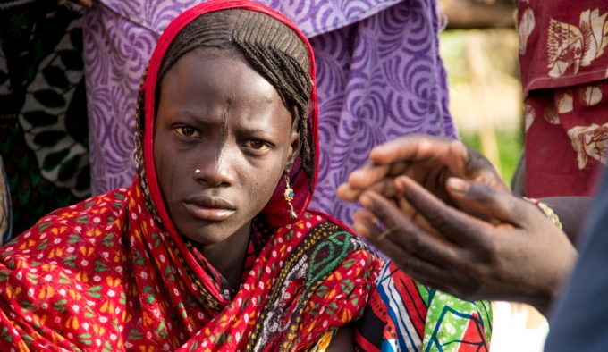

Chad: Changing lives in the Lac region


A young girl working at the fish market in Tagal. Credit: OCHA/Ivo Brandau
Across the Lake Chad Basin, over 9 million people desperately need humanitarian aid due to conflict, and 6.3 million people lack sufficient nutrition.
This record number of people in extreme need is due to the combined effect of growing insecurity, fast population growth and severe vulnerability. This is all the result of a changing climate, environmental degradation, poverty and underinvestment in social services.
On the Chadian side of the Lake, more than 250,000 people need assistance. The humanitarian community, supported by generous donors, is striving to respond to the most pressing needs, but while also addressing the root causes of the crisis and strengthening community resilience.
Multisectoral assistance is saving and changing lives in the Lac region. But more support from donors is urgently needed to expand these efforts and improve the lives of children, women and men affected by one of the world’s most neglected and underfunded humanitarian crises.
On 23 September, donors pledged over US$163 million to support life-saving aid in the Lake Chad Basin. However, this generous contribution is not enough. A total of $542 million—including $66 million for Chad alone—is necessary to deliver humanitarian aid to 6 million people in the next three months. This revised amount is more than the original projected total for the year.
Below are some examples of how desperately needed funds can save lives.
Expanding access to health care services
International Medical Corps (IMC) UK has been providing vital health care and nutrition services in the Lac region since 2012. With funding from the European Union (EU), IMC has expanded its areas of activity and scope of intervention over the past year. Between September 2015 and March 2016, 20,000 people received health care in mobile clinics in four IDP sites or at Bol and Baga-Sola hospitals.
In the second phase of the EU project, which started in April 2016, mobile clinics reached four additional sites for Internally Displaced Persons (IDPs), while secondary health-care efforts were concentrated in Baga-Sola hospital. As a result, the number of vulnerable people accessing health-care services increased to more than 26,000. The number of primary health-care consultations per month provided by mobile clinics increased from 1,600 to 2,100, and the hospital mortality rate reduced from 5 to 3.2 per cent.
People wait outside a mobile clinic in the Lac region. Credit: IMC/2016
Particular emphasis was placed on fighting malnutrition among children under age 5—an issue plaguing the Lac region. In the project’s first phase, 84 children per month were screened for malnutrition; in the second phase, the number increased fivefold to 450.
All severely malnourished children are referred to the outpatient therapeutic programme, while their caregivers receive infant and young child feeding counselling. Additionally, since April 2016, 345 children are being vaccinated every month, compared with 198 per month in the first phase of the project. More and more children are thus vaccinated against preventable diseases.
Kaltouma Ali left her village on an island to flee violence. She now lives at the Kafia IDP site and benefits from IMC’s intervention: “International Medical Corps helped us by creating a health centre where children, pregnant women and other adults receive medical assistance. Treatment is free and serious cases are transferred to the hospital,” she said.
Abora Idriss, a 22-year-old man, was one of those people transferred from Kiskawa to the hospital.
“It started with acute stomach pain and vomiting,” he said. “When I was brought by ambulance to the Bagasola hospital, I was unconscious from too much pain and fever. I was desperate and my people were very scared. When we arrived, I was operated on, and I was told that I had holes in my intestines. As I began healing and started eating, the hope came back. Now I am walking again, I can eat everything without vomiting and my family is very happy. We have been told to get ready, as any time now we will be going home. I want to say that not only was I brought to the hospital, operated on and given drugs without paying a cent, but I was also given a daily allowance for food. This helped my family a lot, because we are from far away and don’t have family here.”
| In the Lac region, more support is needed to scale up access to primary health care for 77,000 displaced people and host communities. This includes access to drugs and mobile clinics, and support to health centres. |
Improving access to education for children in emergencies
Education is a child’s fundamental right and is critical during emergencies and times of conflict. Thanks to support from the Central Emergency Response Fund (CERF) since the crisis began in the Lac region, UNICEF ensured access to equitable and inclusive education for more than 34,000 children (almost 40 per cent of whom are girls) in IDP sites and in the Dar-es-Salam refugee camp. This was achieved through the construction of 34 temporary learning spaces. Each student also received recreational and learning materials.

Yande, 17 (left), and Yekaka, 18, attend school in Dar-es-Salam refugee camp. cREDIT: UNICEF Chad/2016/Bahaji
Because of this intervention, children such as Yande, 17, now have the possibility to fulfil their right to an education and develop their potential.
Married at the age of 15, Yande fled from Niger to Chad after her husband was killed by Boko Haram. She now attends school in Dar-es-Salam refugee camp while taking care of her child in class.
“With my baby, I was hesitant to come to school, but the principal said that I could bring him to class,” she explained. “I think that school can help women to become self-sufficient. If I had the opportunity to go to school, I wouldn’t have married so young. Some people make fun of me when I tell them I want to continue going to school. But for me, there’s no right age for school; what matters is your will.”

Musa Mohammed Tukur, teacher. Credit: UNICEF Chad/2016/Esiebo
Thanks to CERF funding, 50 teachers were trained in specific pedagogical approaches and content, such as psychosocial support and HIV prevention.
Musa Mohammed Tukur, 33, is one of those teachers. “I am now a teacher,” he explained. “UNICEF was looking among the refugees to help in the school, someone who could speak French and the local language. It is hard at times, but I am very happy. Life in the camp is not easy, but our children can prosper and have a goal in life. I encourage every one of them because all children have their own talents. I see they are learning many things. They have great aspirations. I believe there is hope despite all this war.”
| In the Lac region, more support is urgently needed to provide emergency education to 13,200 children and improve learning conditions for 53,200 children. |
Providing in-kind food assistance and cash transfers
Since the launch of the emergency operation in the Lac region, the World Food Programme (WFP) has delivered food assistance to 130,000 displaced people and refugees, thanks to contributions from USAID/Food for Peace. This assistance is essential to save the lives of those who have fled their homes and lost their livelihoods.
Since July 2016, more than 10,000 vulnerable people in several displacement sites around Bol benefit from monthly cash transfers by WFP, with support from Canada and Germany. Families receive 6,000 FCFA [$11] per month per registered family member. So far, more than FCFA 110 million [almost $200,000] has been distributed. This intervention is the first large-scale cash-transfer programme in the Lac region, and its positive impact extends beyond beneficiaries: local markets experience more demand, thus contributing to reboosting local economies. Cash transfers also restore decision-making power and self-sufficiency for people who have long been dependent on humanitarian assistance.

Credit: WFP/Nathalie Magnien
Tchelou Moussa lives in one of those displacement sites with her two children. She recently received the registration card that enables her to benefit from the programme.
Her husband is hundreds of kilometres away: he lives in Mao, Kanem, in Chad’s Sahelian belt, where he has found work. He sends Tchelou money from time to time, but it is not enough to cover all their needs.
Tchelou explains: “Until now I only knew food distributions, but thanks to this new way of getting help, I can go to the nearest market and choose what I want.”
This “right to choose” is so important for Tchelou, who lost everything after fleeing violence. Now she can plan what she would like to cook for her family, such as a daraba sauce (a nutritious ocra -based dish). She also wants to buy rice, maize, oil, sugar, tea and possibly some soap. This is a win-win game for Tchelou and the local traders, who find new customers for their products.
| In the Lac region, more support is desperately needed to provide food assistance to displaced people in over 50 spontaneous settlements and to 130,000 other severely food-insecure people. |
Today, the humanitarian community in Chad has received only 32 per cent of the funds required to provide vital multisectoral assistance to vulnerable people in the Lac region.
A total of $66 million is urgently needed by UN agencies and NGOs from September to December 2016.